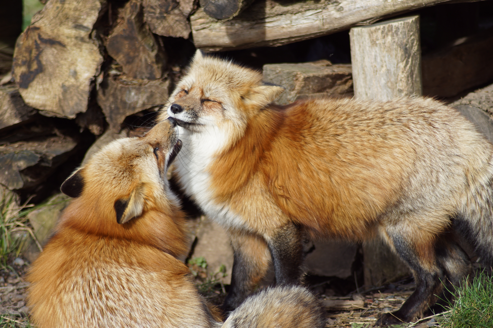
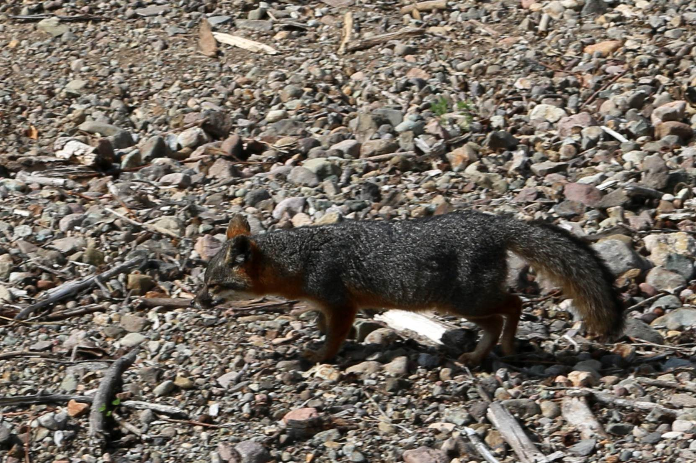

Foxes are small to medium-sized, omnivorous mammals belonging to several genera of the family Canidae. Foxes have a flattened skull, upright triangular ears, a pointed, slightly upturned snout, and a long bushy tail (or brush).
Twelve species belong to the monophyletic "true foxes" group of genus Vulpes. Approximately another 25 current or extinct species are always or sometimes called foxes; these foxes are either part of the paraphyletic group of the South American foxes, or of the outlying group, which consists of the bat-eared fox, gray fox, and island fox. Foxes live on every continent except Antarctica. By far the most common and widespread species of fox is the red fox (Vulpes vulpes) with about 47 recognized subspecies. The global distribution of foxes, together with their widespread reputation for cunning, has contributed to their prominence in popular culture and folklore in many societies around the world. The hunting of foxes with packs of hounds, long an established pursuit in Europe, especially in the British Isles, was exported by European settlers to various parts of the New World.
Foxes are generally smaller than some other members of the family Canidae such as wolves and jackals, while they may be larger than some within the family, such as Raccoon dogs. In the largest species, the red fox, males weigh on average between 4.1 and 8.7 kilograms (9 and 19 1⁄4 pounds), while the smallest species, the fennec fox, weighs just 0.7 to 1.6 kg (1 1⁄2 to 3 1⁄2 lb).[8] Foxy features typically include a triangular face, pointed ears, an elongated rostrum, and a bushy tail. Foxes are digitigrade; they walk on their toes. Unlike most members of the family Canidae, foxes have partially retractable claws.[9] Fox vibrissae, or whiskers, are black. The whiskers on the muzzle, mystaciae vibrissae, average 100–110 millimetres (3 7⁄8–4 3⁄8 inches) long, while the whiskers everywhere else on the head average to be shorter in length. Whiskers (carpal vibrissae) are also on the forelimbs and average 40 mm (1 5⁄8 in) long, pointing downward and backward.[2] Other physical characteristics vary according to habitat and adaptive significance.
Pelage
Fox species differ in fur color, length, and density. Coat colors range from pearly white to black-and-white to black flecked with white or grey on the underside. Fennec foxes (and other species of fox adapted to life in the desert, such as kit foxes), for example, have large ears and short fur to aid in keeping the body cool. Arctic foxes, on the other hand, have tiny ears and short limbs as well as thick, insulating fur, which aid in keeping the body warm. Red foxes, by contrast, have a typical auburn pelt, the tail normally ending with a white marking. A fox's coat color and texture may vary due to the change in seasons; fox pelts are richer and denser in the colder months and lighter in the warmer months. To get rid of the dense winter coat, foxes moult once a year around April; the process begins from the feet, up the legs, and then along the back. Coat color may also change as the individual ages.
Behaviour

Two foxes playing with each other
In the wild, the typical lifespan of a fox is one to three years, although individuals may live up to ten years. Unlike many canids, foxes are not always pack animals. Typically, they live in small family groups, but some (such as Arctic foxes) are known to be solitary.
Foxes are omnivores. Their diet is made up primarily of invertebrates such as insects and small vertebrates such as reptiles and birds. They may also eat eggs and vegetation. Many species are generalist predators, but some (such as the crab-eating fox) have more specialized diets. Most species of fox consume around 1 kg (2.2 lb) of food every day. Foxes cache excess food, burying it for later consumption, usually under leaves, snow, or soil. While hunting, foxes tend to use a particular pouncing technique, such that they crouch down to camouflage themselves in the terrain and then use their hind legs to leap up with great force and land on top of their chosen prey. Using their pronounced canine teeth, they can then grip the prey's neck and shake it until it is dead or can be readily disemboweled.
The gray fox is one of only two canine species known to regularly climb trees; the other is the raccoon dog.
But... What does the fox say?
The fox's vocal repertoire is vast:
Whine
– Made shortly after birth. Occurs at a high rate when kits are hungry and when their body temperatures are low. Whining stimulates the mother to care for her young; it also has been known to stimulate the male fox into caring for his mate and kits.
Yelp – Made about 19 days later. The kits' whining turns into infantile barks, yelps, which occur heavily during play.
Explosive call – At the age of about one month, the kits can emit an explosive call which is intended to be threatening to intruders or other cubs; a high-pitched howl.
Combative call – In adults, the explosive call becomes an open-mouthed combative call during any conflict; a sharper bark.
Growl – An adult fox's indication to their kits to feed or head to the adult's location.
Bark – Adult foxes warn against intruders and in defense by barking.
In the case of domesticated foxes, the whining seems to remain in adult individuals as a sign of excitement and submission in the presence of their owners.
Several fox species are endangered in their native environments. Pressures placed on foxes include habitat loss and being hunted for pelts, other trade, or control. Due in part to their opportunistic hunting style and industriousness, foxes are commonly resented as nuisance animals. On the other hand, foxes, while often considered pests themselves, have been successfully employed to control pests on fruit farms while leaving the fruit intact.
Island fox

The endangered Island fox
The island fox, though considered a near-threatened species throughout the world, is becoming increasingly endangered in its endemic environment of the California Channel Islands. A population on an island is smaller than those on the mainland because of limited resources like space, food and shelter. Island populations, therefore, are highly susceptible to external threats ranging from introduced predatory species and humans to extreme weather. On the California Channel Islands, it was found that the population of the island fox was so low due to an outbreak of canine distemper virus from 1999 to 2000 as well as predation by non-native golden eagles. Since 1993, the eagles have caused the population to decline by as much as 95%. Because of the low number of foxes, the population went through an Allee effect; this is where at low enough densities, an individual's fitness decreases. Conservationists, therefore, had to take healthy breeding pairs out of the wild population to breed them in captivity until they had enough foxes to release back into the wild. Nonnative grazers were also removed so that native plants would be able to grow back to their natural height, thereby providing adequate cover and protection for the foxes against golden eagles.
Darwin's fox
Darwin's fox is considered critically endangered because of their small known population of 250 mature individuals as well as their restricted distribution. On the Chilean mainland, the population is limited to Nahuelbuta National Park and the surrounding Valdivian rainforest. Similarly on Chiloé Island, their population is limited to the forests that extend from the southernmost to the northwesternmost part of the island. Though the Nahuelbuta National Park is protected, 90% of the species live on Chiloé Island. A major problem the species faces, therefore, is their dwindling, limited habitat due to the cutting and burning of the unprotected forests. Because of deforestation, the Darwin's fox habitat is shrinking, allowing for their competitor's (chilla fox) preferred habitat of open space, to increase; the Darwin's fox, subsequently, is being outcompeted. Another problem they face is their inability to fight off diseases transmitted by the increasing number of pet dogs. To conserve these animals, researchers suggest the need for the forests that link the Nahuelbuta National Park to the coast of Chile and in turn Chiloé Island and its forests, to be protected. They also suggest that other forests around Chile be examined to determine whether Darwin's foxes have previously existed there or can live there in the future, should the need to reintroduce the species to those areas arise. And finally, the researchers advise for the creation of a captive breeding program, in Chile, because of the limited number of mature individuals in the wild.
Foxes are often considered pests or nuisance creatures for their opportunistic attacks on poultry and other small livestock. Fox attacks on humans are not common. Many foxes adapt well to human environments, with several species classified as "resident urban carnivores" for their ability to sustain populations entirely within urban boundaries. Foxes in urban areas can live longer and can have smaller litter sizes than foxes in non-urban areas. Urban foxes are ubiquitous in Europe, where they show altered behaviors compared to non-urban foxes, including increased population density, smaller territory, and pack foraging. Foxes have been introduced in numerous locations, with varying effects on indigenous flora and fauna.
In some countries, foxes are major predators of rabbits and hens. Population oscillations of these two species were the first nonlinear oscillation studied, and led to the derivation of the Lotka–Volterra equation.
Fox hunting
Fox hunting originated in the United Kingdom in the 16th century. Hunting with dogs is now banned in the United Kingdom, though hunting without dogs is still permitted. Red foxes were introduced into Australia in the early 19th century for sport, and have since become widespread through much of the country. They have caused population decline among many native species and prey on livestock, especially new lambs. Fox hunting is practiced as recreation in several other countries including Canada, France, Ireland, Italy, Russia, United States and Australia.
Domestication
There are many records of domesticated red foxes and others, but rarely of sustained domestication. A recent and notable exception is the Russian silver fox, which resulted in visible and behavioral changes, and is a case study of an animal population modeling according to human domestication needs. The current group of domesticated silver foxes are the result of nearly fifty years of experiments in the Soviet Union and Russia to domesticate the silver morph of the red fox. This selective breeding resulted in physical and behavioral traits appearing that are frequently seen in domestic cats, dogs, and other animals, such as pigmentation changes, floppy ears, and curly tails. Notably, the new foxes became more tame, allowing themselves to be petted, whimpering to get attention and sniffing and licking their caretakers.
Attacks on humans
In the United Kingdom, a number of cases of non-fatal attacks on humans have been reported. They often involved children, or if there were gaps in homes through which foxes could pass.
Urban foxes
Foxes are among the comparatively few mammals which have been able to adapt themselves to a certain degree to living in urban (mostly suburban) human environments. Their omnivorous diet allows them to survive on discarded food waste, and their skittish and often nocturnal nature means that they are often able to avoid detection, despite their larger size. Urban foxes, however, have been identified as threats to cats and small dogs, and for this reason there is often pressure to exclude them from these environments.
The San Joaquin kit fox is a highly endangered species that has, ironically, become adapted to urban living in the San Joaquin Valley and Salinas Valley of southern California. Its diet includes mice, ground squirrels, rabbits, hares, bird eggs, and insects, and it has claimed habitats in open areas, golf courses, drainage basins, and school grounds.
Foxes in culture
The fox appears in many cultures, usually in folklore. However, there are slight variations in their depictions. In Western and Persian folklore, foxes are symbols of cunning and trickery—a reputation derived especially from their reputed ability to evade hunters. This is usually represented as a character possessing these traits. These traits are used on a wide variety of characters, either making them a nuisance to the story, a misunderstood hero, or a devious villain.
In Asian folklore, foxes are depicted as familiar spirits possessing magic powers. Similar to in Western folklore, foxes are portrayed as mischievous, usually tricking other people, with the ability to disguise as an attractive female human. However, there are other depictions of foxes as mystical, sacred creatures that can either bring wonder or ruin. Nine-tailed foxes appear in Chinese folklore, literature, and mythology, in which, depending on the tale, they can be a good or a bad omen. The motif was eventually introduced from Chinese to Japanese and Korean cultures.